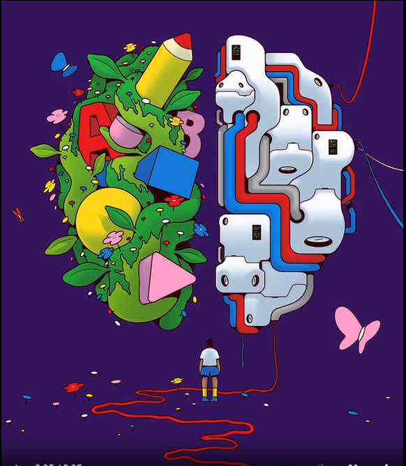

Learning Without Artificial Intelligence for Our Brain

Learning without artificial intelligence protects the deep, human process of productive struggle, critical thinking, and true mental resilience.
Related Writings
- I hate what AI is doing to the minds and happiness of the young': Katherine Rundell on the view from the classroom
- Exploring the Relationship between Fear of Being without Artificial Intelligence, AI Addiction, and Academic Self-Efficacy among University Students
These writings are digging deeper into the effects of AI on the human brain and mental health.